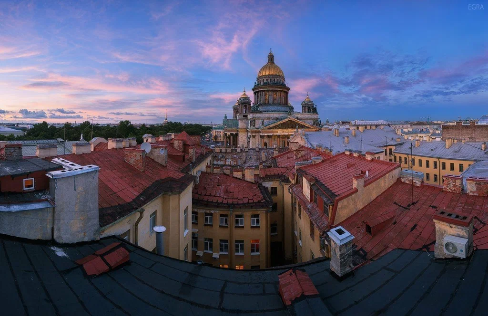

экскурсионный проект · Санкт-Петербург · с 2018 года
UrbanSky — частный экскурсионный проект, специализирующийся на организации городских маршрутов с использованием обзорных точек на крышах зданий Санкт-Петербурга.
Компания работает с 2018 года и занимается разработкой маршрутов различной сложности, включая как стандартные экскурсионные направления, так и альтернативные городские маршруты.
Основная деятельность включает планирование маршрутов, сопровождение групп, координацию доступа к объектам и обеспечение безопасности участников.
За время работы было проведено более 600 экскурсий.
Часть маршрутов может корректироваться в зависимости от погодных условий, доступности объектов и других факторов городской среды.
Информация, представленная на сайте, может обновляться без уведомления пользователей. Некоторые данные могут отличаться от внутренних записей компании.
Панорамы Санкт-Петербурга с высоты городских крыш.

Исторический центр — 10–15 октября
Ночные крыши — 11–14 октября
Архитектура города — 9–13 октября
Индивидуальные маршруты — по согласованию
13 октября — технический перерыв, экскурсии не проводятся
В отдельных случаях информация о маршрутах может не отображаться в публичной версии сайта.
Данные сайта синхронизируются с внутренними системами компании.
Возможны временные расхождения между опубликованной информацией и фактическими маршрутами.
Часть информации может быть недоступна или изменена.
Внутренние изменения не всегда отображаются в публичной версии.
© UrbanSky, 2018–2026 Санкт-Петербург